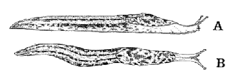

Point prediction using transformed variables
If a transformation of Y follows a normal linear model with an explanatory variable that is a transformation of X, a least squares line that is fitted to the transformed data is used for predictions.
To obtain a prediction of Y at any value x,
For example, if the square root of Y is linearly related to X, we use the least squares line to obtain a prediction of sqrt(Y), then square this to get a prediction of Y itself.
Slug weight and length
99 slugs of the species Limax maximus were collected by two researchers. The slugs were preserved in a relaxed state and subsequently their weight (gm) and length (cm) recorded.

Limax maximus: A, lateral aspect; B, dorsal aspect
Since weight is related to volume, it was anticipated that weight might be proportional to (length)3. Generalising a little,
weight = a × length p
log (wt) = log (a) + p × log (len)
If this model holds, log(wt) will be linearly related to log(len). Indeed, the model will allow us to test whether the appropriate power is p = 3.
The diagram below shows that the logs of weight and length are approximately linearly related and seem to satisfy the normal linear model assumptions. The least squares line is also shown, both on the transformed scatterplot and on a scatterplot of the original data.
Click on the scatterplot at any length (or log-length) to see how log(wt) is predicted using the least squares slope and intercept. From this, the weight is predicted by raising 10 to this power — the inverse transformation to log10.
Prediction intervals
Prediction intervals can be obtained in a similar way.
For example, if the square root of Y is linearly related to X, we find a prediction interval for sqrt(Y), then square both ends of this interval to get a prediction interval for Y itself.
Although the prediction interval for the transformed Y has a similar width over the range of x-values in the data, the resulting prediction interval for Y itself may vary much more in width.
Slug weight and length
The red band on the scatterplot of log(wt) against log(length) on the left below shows 95% prediction intervals. Use the slider under the diagram to display the prediction interval for the weight of a slug of any length.
The scatterplot on the right shows the corresponding data and prediction intervals on a plot of the untransformed variables. Observe that the prediction interval for the weight of a new long slug is much wider than that for a short slug.